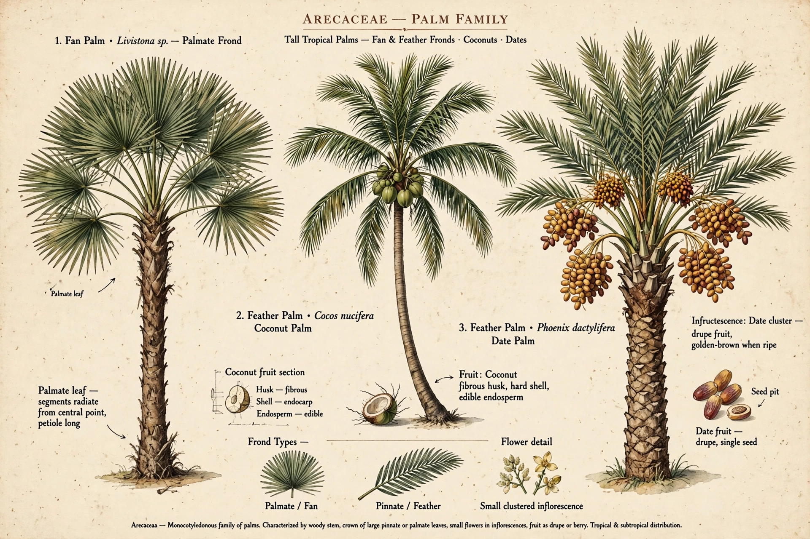

The Arecaceae is a family of perennial flowering plants in the monocot order Arecales. Commonly known as the palm family, their growth form can be climbers, shrubs, tree-like and stemless plants, all commonly known as palms. About 181 genera with around 2,600 known species are currently recognised, mostly restricted to tropical and subtropical climates.

| Kingdom | Plantae |
|---|---|
| Order | Arecales |
| Family | Arecaceae Bercht. & J.Presl |
Most palms are distinguished by large, compound, evergreen leaves (fronds) arranged at the top of an unbranched stem, though many have clustering or vining habits (e.g., rattans). Flowers are small, in large inflorescences, and fruit is typically a drupe.
Palms are among the most economically important plant families after grasses and legumes: coconut, date palm (including Deglet Nour), oil palm, areca nut, and many ornamentals. The date palm Phoenix dactylifera has been cultivated for millennia in the Middle East and North Africa.
The fossil record appears in the Late Cretaceous, about 80 million years ago.